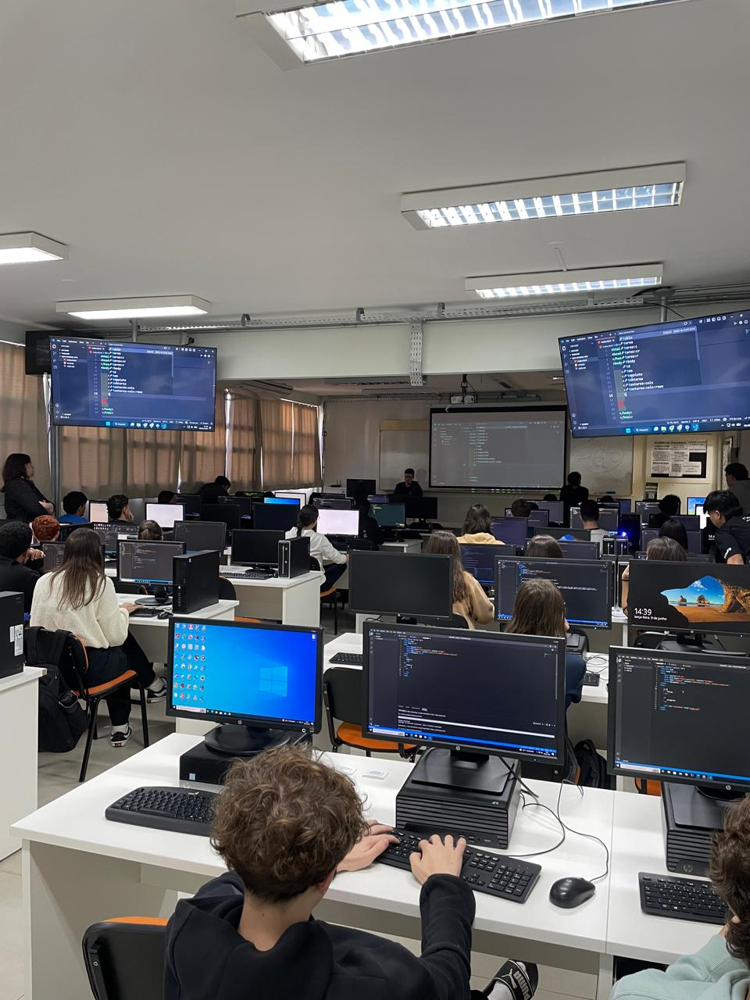

Relatório – 5ª Aula
Data: 09/06/2026
Turma: A
Instrutor:Victor
Projeto Prático: Página "Sobre Mim"
Na aula do dia 09 de junho, o instrutor Victor aprofundou os conceitos de HTML e estruturação semântica, explorando elementos um pouco mais avançados e técnicas de estruturação de páginas web. Com o objetivo de reforçar o aprendizado, os alunos foram desafiados a desenvolver um projeto bem prático: criar uma página no estilo "Sobre Mim", funcionando como um portfólio pessoal básico. A atividade exigia a aplicação obrigatória de tags essenciais, como <h1> para o título, <p> para a biografia, <img> para fotos e as listas <ol> e <ul> para organizar suas habilidades.
No geral, tivemos uma aula muito boa e produtiva, já que os alunos gostam bastante dessa parte prática de colocar a mão na massa. Foi bem legal acompanhar o começo deles na arquitetura de um site e ver como transformaram a teoria em código, deixando a base pronta para as próximas atividades.
